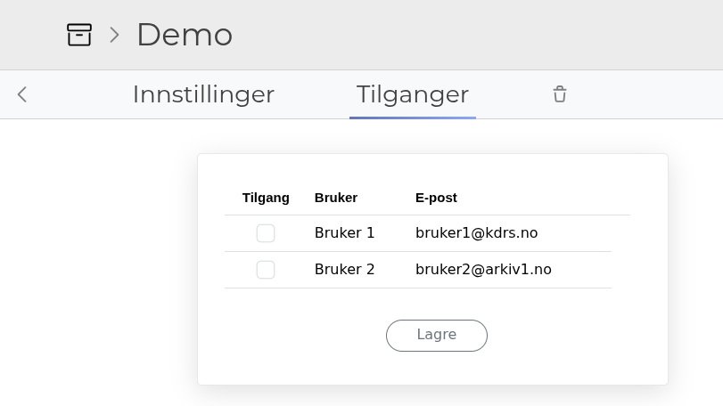
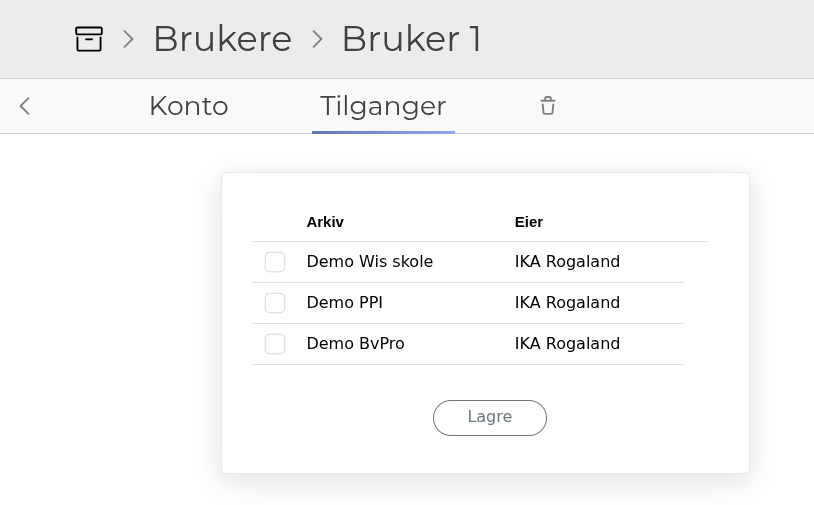
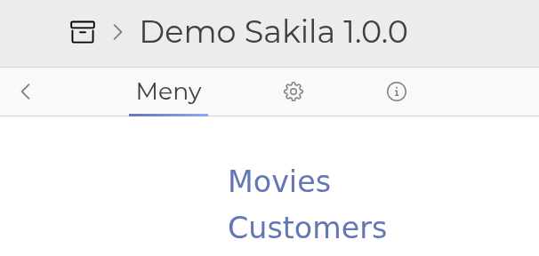
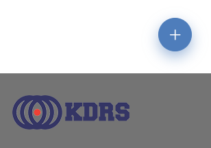
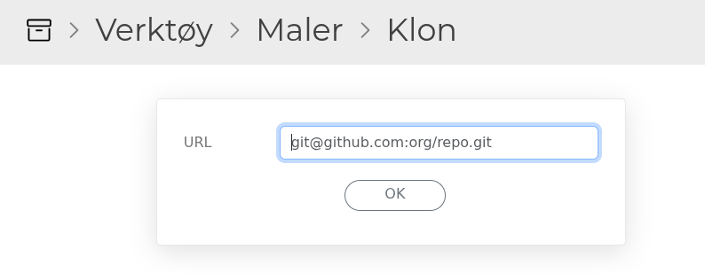
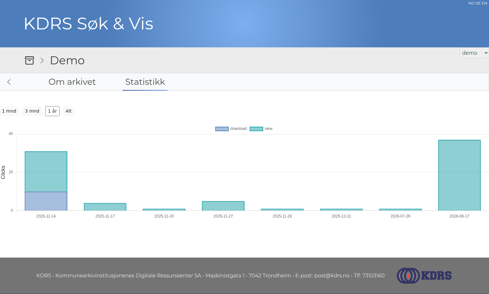

1.7 Highlights ★
Highlights for KDRS Search & View 1.7.0 (June 2026) and 1.7.1 (August 2026).
Table of Contents
New features
Updated admin interface
You can now assign users directly from an archive:

And assign archives directly from a user:

Tab based navigation

Plus button
New items are created with the plus button on the bottom right side of the page.

Archiver role expanded
- See all users and all companies
- Manage any archive
- Delete a company
Header and footer partials
A Ruby view can now render the header and footer fields defined in XML with render 'header' and render 'footer'.
Clone templates from URL
Clone templates directly from a URL, in addition to the git server at maler.kdrs.no.

Streamed downloads
Downloads of LOBs and zip files are now streamed, reducing memory usage and improving performance for large files.
Enhanced statistics
- Grouped by activity type (view/download)
- Period selector: 1 month, 3 months, 1 year, all time

Validation improvements
- Validations show the path to the file with the error
- Detects foreign keys without a parent record
XML
- Duplicate tag detection
- The
rowtag with valuemaxfetches the maximum number of rows (currently 10.000)
Security scanning
Added bundler-audit as a security scanner for dependencies.
Improved or fixed
1.7.1
- db: upgrade could stop on
db:migrate - db: leftover logo field cleaned up
- user grants: archives sorted by name
- ui: forms and tables adapt when the window is narrow
- ui: less wrapping in grants pages
- ui: cosmetic fixes
- lib: Puma webserver 6.x to 7.x
- lib: local Tomcat CAS server 9.0.117 to 9.0.120
1.7.0
- user grants: full name and email are shown instead of company name, and the list is sorted
- statistics: view was not scoped to the current archive
- security: user catalog update not allowed when
LOCAL_LOGIN=false - security: fix for the archiver role
- security: renaming a company in the cloud now requires admin
- lobs: MIME type detection was not running for Solr LOBs
- ui: redirect loop when the redirected page also had an error
- ui: print and download buttons are now translated
- templates: crash when the template manager was loaded concurrently
- db: MySQL tables are converted from utf8mb3 to utf8mb4
- lib: Rails 6.1.7.10 to 8.0.2
- lib: Ruby 3.2.2 to 3.3.7
- lib: Solr 8 to 9
- lib: DBPTK 2 to 3
Deprecated
- The
customviewtag is deprecated. Userubyviewinstead. - The logo feature has been removed. We are considering built in logos.
- Edit mode deprecated